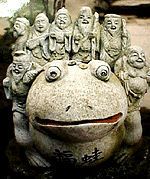
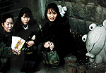
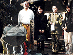
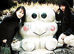

|
男子フィギュアでカエル降る？ 【神奈川発=kei-f同志記者】「2000国際オープンフィギュアスケート選手権大会」におかれまして、またまたカエルが登場しました!!!それはフランスの男子フィギュアスケート選手、キャンデローロ選手が感動的な演技を終えて得点の発表を待っているとき、なんと!上方から手足を含めておよそ1メートルあろうかという巨大カーミットが降ってきたのです!!!←詳細は次号を待て！画像撮影した人は投稿してくれえええ！！  慶祝！カエル暦３年の新春企画！カエル初詣！北部九州ルートを行く！【福岡発=げこげこ大王７世直筆】カエルの日が制定されて３年目の年を迎える新年２日。全国かえる奉賛会は、熊本、福岡、佐賀の３カ所のカエル名所を訪問し、輝かしい一年の始めに、カエルな決意を新たにしたぞお！同行できなかった全国のカエラーのために、速攻でレポートする。写真は、新春にふさわしい、背中に多数の福の神を背負った、ガマカエルだあ。
みんなも、故郷のカエル名所を巡るカエル初詣を来年から主催して報告してくれーっ！
その一！熊本の五右衛門座乗ガマ 九州自動車道のサービスエリア熊本北の上り線に出現した超巨大なガマガエルは、ものすごい迫力だった。午前１０時に福岡を出発した、大王、ぴのこ同志、走るカエルりょーこ同志の３人は、午前１１時半過ぎに熊本肥後５４万石支部長のんたん同志と合流。五右衛門が乗ったガマを拝観した。
九州自動車道のサービスエリア熊本北の上り線に出現した超巨大なガマガエルは、ものすごい迫力だった。午前１０時に福岡を出発した、大王、ぴのこ同志、走るカエルりょーこ同志の３人は、午前１１時半過ぎに熊本肥後５４万石支部長のんたん同志と合流。五右衛門が乗ったガマを拝観した。このガマは、地元の矢部町というところで、お祭りがあり、そこで引き物として、町中を練り歩くために作ったものらしい。松ぼっくりと木の皮でできたエコロジーな作品で、ガマも五右衛門も、迫力たっぷりの視線で、にらんでいるが、子供を始め親子連れなどからも『うわああ。カエルだあ』とビックリされながらも愛されている姿が感動的だった。 その二！福岡県小郡のカエル寺 そのまま熊本県人のんたん同志とともに、福岡県が誇るカエル天国・かえる寺を午後２時に訪問した。
 原口住職も寺にいて、茶をいただくなど接待を受けつつ、カエルみくじや、カエルお守りを手に入れて、今年一年の無事を祈念しました。ちなみに、みくじを引いたぴのこ同志は、財布に入れるお守りとして、見事にカエルをゲットした。
去年、訪問したときに比較して、一段とカエルが増殖していたのと、今年中に、さらに壮大なカエル計画構想が実現にうつされるかも知れないとのことで、その時は、カエル新聞で、計画が明らかになるであろう。
 その三！佐賀県古湯温泉カエル小郡で、のんたん同志と別れた三人は、初詣でにぎわう太宰府付近の交通渋滞を避けるために、九州自動車道を長崎自動車道に進路を取り、佐賀大和インターから、山越えで福岡に戻ることを決意。午後４時過ぎに、古湯温泉に立ち寄り、一年ぶりに、温泉カエルと、ケロッピ？カエルを訪問した。古湯温泉の方々には、この場から重ねて要望したいのですが、あんな素晴らしいカエル入浴像を誰も目に付かない場所に、隠しておくのは、とても残念です。ぜひ表通りに出して、みんなに愛してもらいましょう。
ということで、新年のカエル初詣報告でした。みんなは、どんな正月を送ったでしょうか！今年もカエルな一年になるとおもうぞー。
ロンドンにカエルショップ？【連合王国ロンドン発=keroro同志記者】近所を歩いていて、「Five Frogs」というお店を発見しました。カードや雑貨を扱うお店で、商品の全てがカエルという訳ではないようですが、店頭に割とリアルなカエルちゃんの置物が並んでいて、ケロリスト魂をちょっとくすぐるお店でした。ロンドン北西部の住宅地、Heath Streetという通りにあるのですが、観光にお越しの方は一度覗いてみては？２０００年にイズノスケが大爆発！？【神奈川発=kei-f同志記者】あけましておめでとうございます。さて、元日の朝、テレビを見ていたところ、カエルの巨大な着ぐるみが目に入りました。それは日本テレビの『ズームイン朝』のお正月特別番組でした。目を凝らしてみたところどうも以前紹介されたイズノスケのようです。早速情報を集めてみました。すると… 『チェンジ伊豆2000』のページがリニューアルされてるいるではありませんか!!!そこではかろやかに舞うイズノスケ達を見ることができます。 さらにはカエルイベントの告知が!!『世界カエル展』伊豆アンディランドにて。さらには『カメとカエルのＴシャツデザイン展』同じく伊豆アンディランドにてが行われているようです。 そこで紹介されている『イズノスケ誕生記』もなかなか興味深いものがあります。伊東温泉にゆっくり浸かりながら、イズノスケ舞う町を散策するというのも粋ではありませんか!!! 【全国かえる奉賛会】今年は、伊豆から目が離せないなー。なにしろイズノスケは、メジャーなキャラなので、静岡県の総力をあげて宣伝に登場するに違いない。これからもイヅノスケ情報を待つ！静岡県のカエラーは、よろしく頼むぞー 投稿採用者に武功カエル徽章を授与！ |
かえる古新聞過去に取り上げた記事を見出し付きで一覧したい人は、ここをクリック◆創刊号を見る◆先週号を見る◆話題の号を見る◆かえる新聞の昔を読む
|
私も入っています。。全国かえる奉賛会
大王様に会うには、このバナーをクリック。ずっと奥に写真館があるぞ。全国かえる奉賛会に入会するには、自分のホームページのどこかに、下の部分を追加するとバナーがリンク付きで表示されるぞ。どんどん入会しましょー |


|